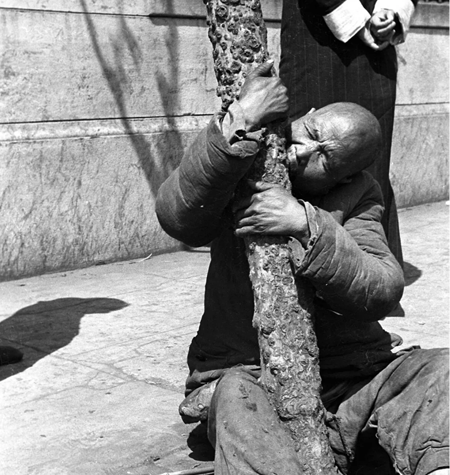
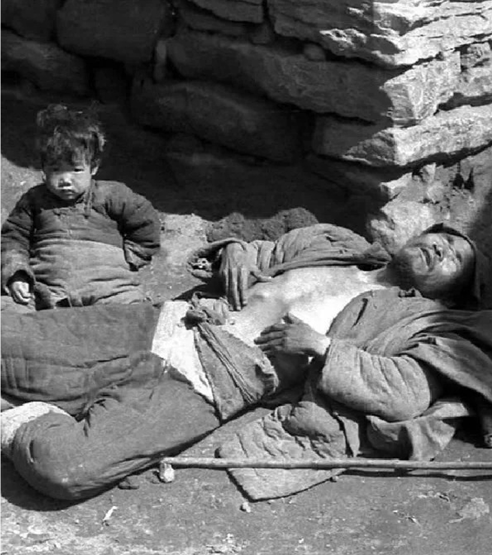
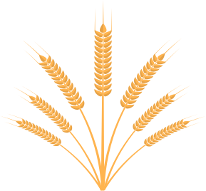
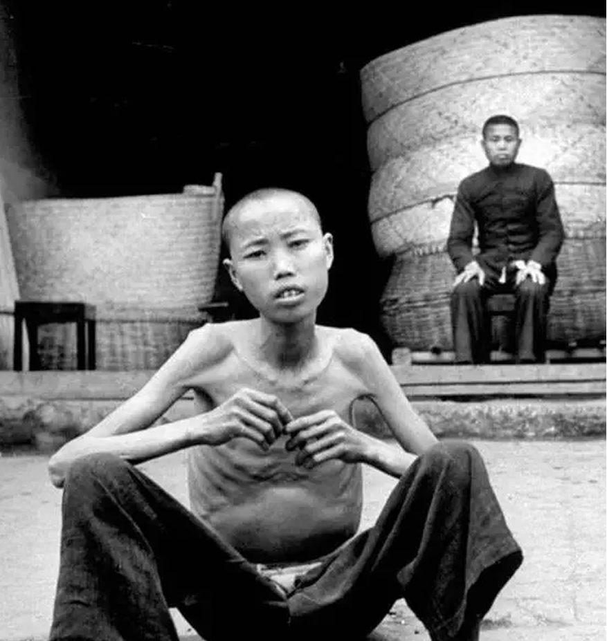
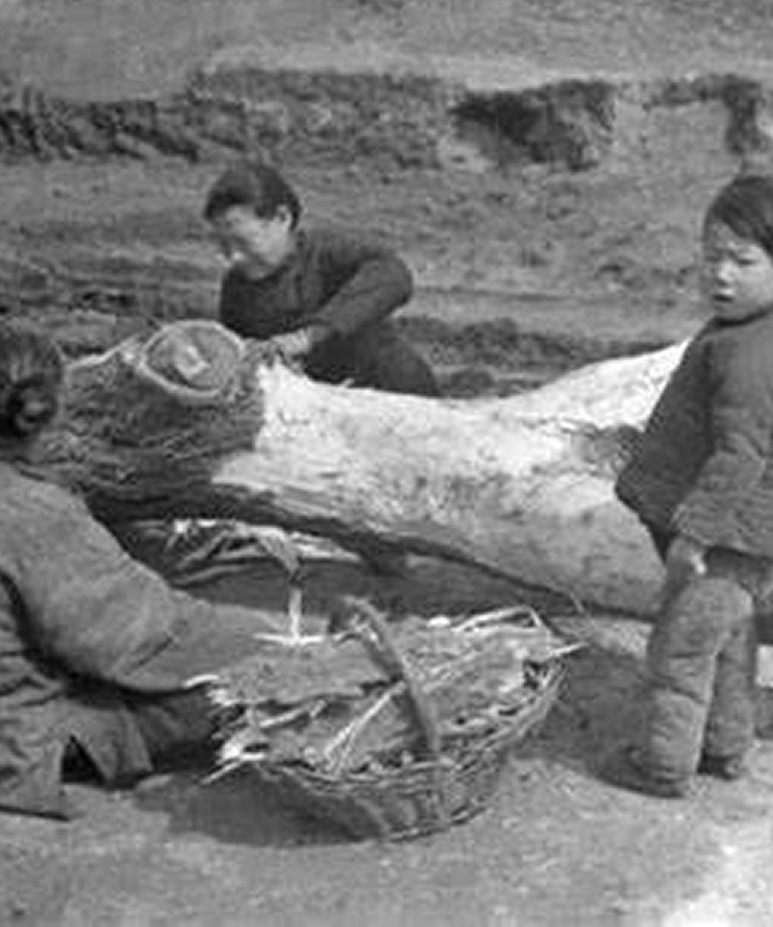

1936年
1937年
号外!
1936年，四川和甘肃地区遭遇严重干旱，土地龟裂，河流干涸，农作物大面积减产。
据估计，约3700万人受灾。四川万源县人口骤减三分之一，甘肃的死亡人数也非常可观。
由于当时的政治动荡和信息封锁，灾情未能得到及时报道和救助，导致大量人员死亡。


1942年
1943年
1942年，河南省遭遇严重干旱，3月至8月间几乎无降雨，导致小麦和大麦颗粒无收。随后，蝗灾爆发，进一步摧毁了农作物。与此同时，抗日战争正酣，日军的轰炸和国民政府的征粮政策加剧了灾情。
据官方统计，约300万人因饥饿死亡，3000万人受灾。大量灾民逃往陕西、山西等地，形成大规模的移民潮。
饥荒期间，出现了人吃人的惨剧。美国记者白修德在《时代》杂志中报道了河南的灾情，引起国际关注。
民不聊生


